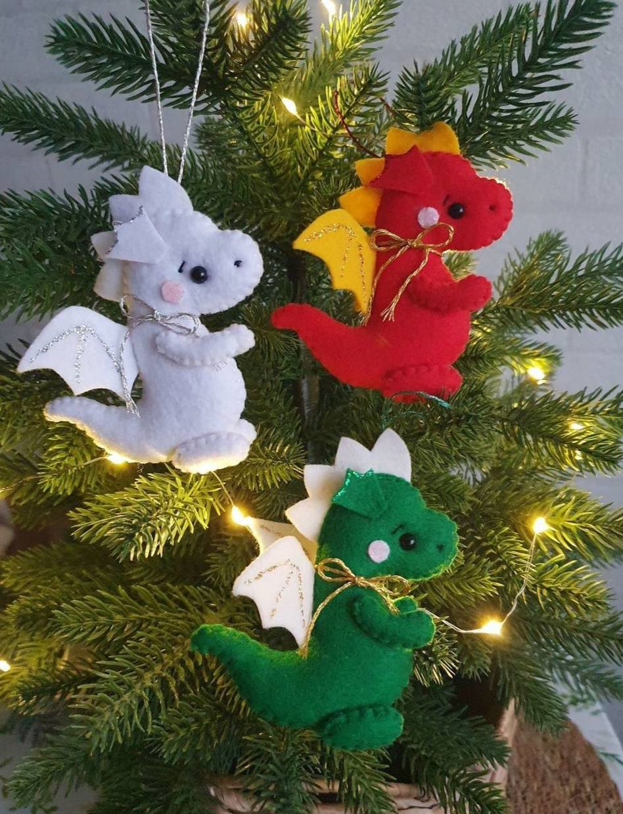
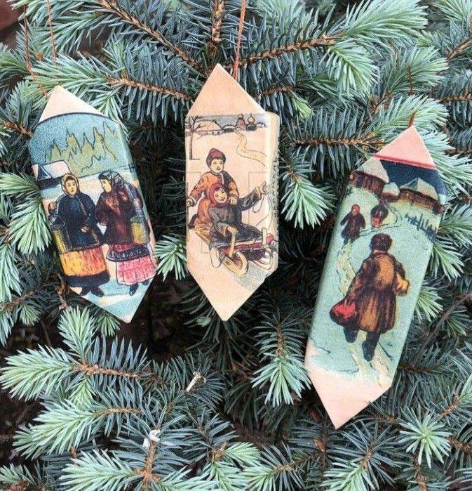
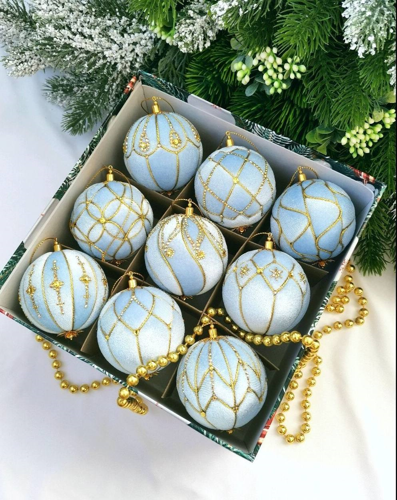

| Название → Описание/История → Вид | |||||
|
Дракон

Дракон - символ 2024 года. Год животного, который объединяет дух земли и неба, приносит благополучие и удачу, считается наиболее благополучным среди всех двенадцати знаков восточного гороскопа. |
Конфеты

Традиция праздновать Новый год с елкой появилась в России при Петре I. Ещё в молодые годы, бывая в гостях у своих немецких друзей, Пётр заметил рождественскую ель, на которой вместо шишек были фрукты и конфеты. |
Набор ёлочных шаров

Легенда рассказывает, что первый елочный шар создали стеклодувы из Лауша, что в Тюрингии (Германия). Случилось это в 1848 году. Тот год оказался малоурожайным на яблоки, и германцам нечем было украшать свои елки. |
|||
|
Звезда
Верхушку ёлки украшали звездой, - символом Вифлеемской звезды, возвестившей миру о рождении Спасителя. |
Щелкунчик
Благодаря Петру Ильичу Чайковскому и его балету «Щелкунчик» этот персонаж стал символом Рождества. |
Имбирные печенья
Идею добавления в муку разных пряностей принесли в Европу рыцари, которые участвовали в походах на Ближний Восток. |
|||
|
☆
Cтудентам предоставляется скидка 10%
Мой вк для отправки студака: ВК |
|||||